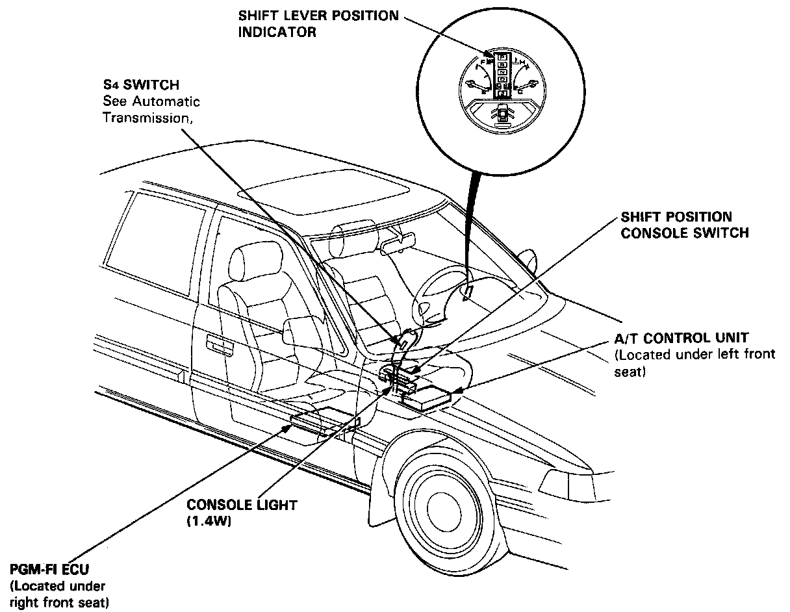

Transmission Shift Position Indicator Lamp: Description and Operation

SRS wire harness is routed near the shift lever position indicator related parts (SRS wire harness locations, All SRS wire harness and connectors are colored yellow. Do not use electrical test equipment on these circuit.
CAUTION: Be careful not to damage SRS wire harness when servicing the shift lever position indicator.
S3/S4 Indicator:
The "S3" indicator light will remain on for about 2 seconds after the ignition switch has been turned on to show that the system circuit is functioning.
The shift lever position indicator is dimmed by the dimming circuit with the lighting switch on and also controlled by the dashlight brightness controller.
In the "S3" mode, the A/T control unit applies voltage to the "D15" terminal of the shift lever position indicator to light up the "S3" indicator.
In the "S4" mode, which can be selected by the "S4" switch, the A/T control unit applies voltage to the "E2" terminal of the shift lever position indicator to light up the "S4" indicator. When the "S4" mode has been selected, the "S4" pilot light in the "S4" switch comes on.
The "S3" indicator also functions as the warning indicator for the A/T control system. If some malfunction occurs in the A/T control system, the A/T control unit applies voltage to the "D15" terminal of the shift lever position indicator to make the "S3" indicator flash. The flashing "S3" indicator informs the driver of some malfunction in the A/T control system. When the "S3" indicator functions as the warning indicator, the A/T control unit sends a cancelling signal to the "E8" terminal of the shift lever position indicator so that the "S3" indicator light is not dimmed.